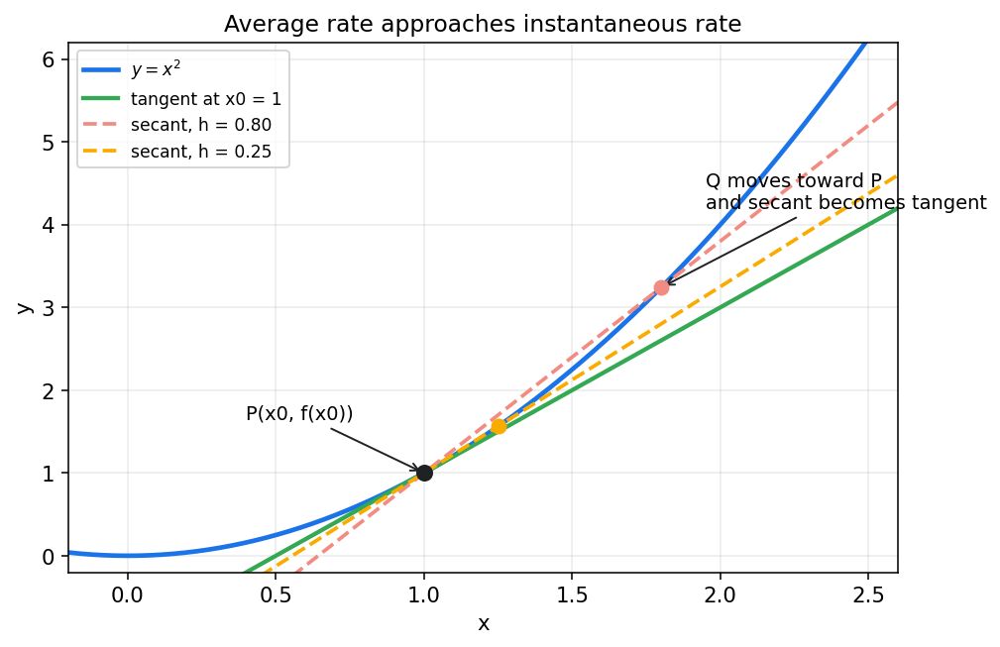
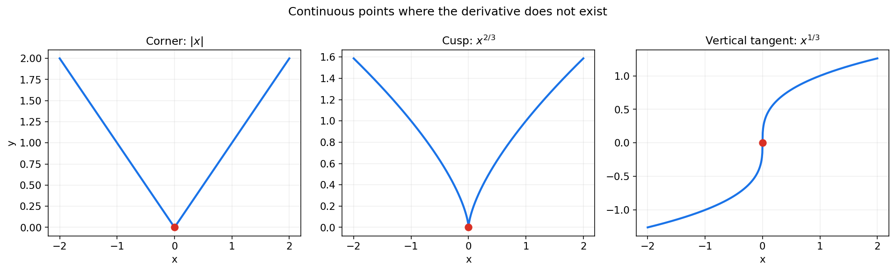
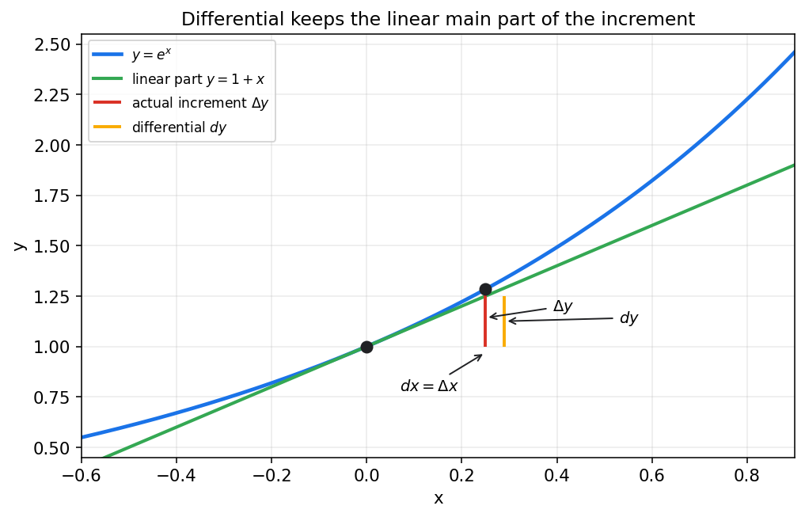

Chapter Map
0. 先看全章主线
第二章把"趋近"推进成"变化快慢". 核心路径是从平均变化率走到瞬时变化率, 再走到局部线性化.
Motivation
1. 从平均变化率开始: 为什么要发明导数
平均速度描述一段时间内的平均情况, 但无法直接回答"某一瞬间到底有多快".
把路程函数记为 $s(t)$, 上式就是时间区间 $[t,t+\Delta t]$ 上的平均速度.

这和平均速度是同一结构: 分子是函数值改变量, 分母是自变量改变量.
设 $s(t)=t^2+2t$, 在 $[1,1+h]$ 上的平均速度为:
令 $h\to0$, 得瞬时速度为 4. 这正是导数思想的雏形.
Definition
2. 导数的定义: 瞬时变化率怎样被严格表达
导数就是差商在自变量改变量趋于 0 时的极限.
因此 $(x^2)'=2x$. 一个具体函数的导数, 本身又是一个新函数.
Meaning
3. 导数的几何意义与物理意义
导数不是抽象符号, 它马上能变成图像上的斜率和物理中的瞬时变化率.
切点为 $(1,1)$, 导数 $y'=2x$, 所以 $f'(1)=2$.
Boundary
4. 可导与连续: 两者是什么关系
可导一定连续, 但连续不一定可导. 这是第二章最重要的边界之一.
若 $f$ 在 $x_0$ 处可导, 第一部分趋于 $f'(x_0)$, 第二部分趋于 0, 因此 $f(x)-f(x_0)\to0$, 函数连续.

Rules
5. 基本求导公式: 从定义走向高效计算
公式不是凭空背来的, 它们来自导数定义和极限运算法则. 但做题时必须熟练调用.
| 函数 | 导数 | 记忆线索 |
|---|---|---|
| $C$ | $0$ | 常数不随 $x$ 变. |
| $x^n$ | $nx^{n-1}$ | 指数放下来, 次数减一. |
| $\sin x$ | $\cos x$ | 三角函数轮换. |
| $\cos x$ | $-\sin x$ | 注意负号. |
| $e^x$ | $e^x$ | 求导后还是自己. |
| $a^x$ | $a^x\ln a$ | 底数不是 $e$ 时补 $\ln a$. |
| $\ln x$ | $\frac1x$ | 定义域 $x>0$. |
| $\log_a x$ | $\frac{1}{x\ln a}$ | 换底后求导. |
| $\tan x$ | $\sec^2 x$ | 商法则可推出. |
求 $y=(x^2+1)e^x$ 的导数.
求 $y=\frac{\ln x}{x}$ 的导数.
Chain Rule
6. 复合函数求导: 链式法则为什么这么重要
复合函数无处不在. 只要函数套函数, 就要先对外层求导, 再乘以内层导数.
求 $y=\ln(\cos x)$ 的导数.
先看外层 $\ln u$, 再看内层 $\cos x$. 漏乘内层导数是最常见错误.
Extensions
7. 反函数, 隐函数与参数方程求导
当函数不再直接写成 $y=f(x)$, 求导方式会变, 但底层仍然是链式法则.
对 $x^2+xy+y^2=3$ 两边求导:
若 $x=\cos t,\ y=\sin t$, 则
Higher Derivatives
8. 高阶导数: 变化率的变化率
导函数如果还能继续求导, 就得到二阶导数, 进而得到更高阶导数.
Differential
9. 微分: 为什么说函数在局部像一条直线
可导意味着在足够小的范围内, 函数增量的主要部分是一个线性项.
$\Delta y$ 是真实增量, $dy$ 是线性近似. 当 $dx$ 很小时, 二者非常接近, 差别来自曲线弯曲.

设 $y=\sqrt{x}$, 在 $x=4$ 附近有 $dy=\frac{1}{2\sqrt{x}}dx$. 取 $dx=0.04$:
设 $y=x^{1/3}$, 选基点 $x=8$, $dx=0.12$.
所以 $\sqrt[3]{8.12}\approx 2.01$.
Workflow
10. 求导时的实战顺序
很多错误不是不会公式, 而是没有先判断函数结构.
常见易错点
- 把差商当导数, 忘记最后取极限.
- 把乘积求导错写成 $u'v'$.
- 链式法则漏乘内层导数.
- 误以为连续就一定可导.
- 把微分 $dy$ 和真实增量 $\Delta y$ 完全等同.
分段函数拼接点
- 先查函数是否连续.
- 再分别算左导数和右导数.
- 左右导数都存在且相等, 才能说可导.
- 不要用单边局部公式直接替代总体结论.
Practice
11. 例题与自测
下面题目覆盖定义求导, 四则法则, 链式法则, 隐函数, 参数方程和微分近似.
自测 1: 用定义求 $x^2$ 在 $x=2$ 处的导数
$\frac{(2+h)^2-4}{h}=4+h$, 令 $h\to0$, 得导数为 4.
自测 2: 判断 $|x-1|$ 在 $x=1$ 是否可导
左导数为 -1, 右导数为 1, 不相等, 所以不可导.
自测 3: 求 $y=x^3\sin x$ 的导数
用乘积法则: $y'=3x^2\sin x+x^3\cos x$.
自测 4: 求 $y=\sin(3x^2)$ 的导数
外层导数 $\cos(3x^2)$, 内层导数 $6x$, 所以 $y'=6x\cos(3x^2)$.
自测 5: 求 $y=\ln(1+e^x)$ 的导数
$y'=\frac{1}{1+e^x}\cdot e^x=\frac{e^x}{1+e^x}$.
自测 6: 隐函数 $x^2+y^2=4$ 求 $y'$
两边求导: $2x+2yy'=0$, 所以 $y'=-\frac{x}{y}$, 其中 $y\ne0$.
自测 7: 参数方程 $x=t^2,y=t^3$ 求 $\frac{dy}{dx}$
$\frac{dy}{dx}=\frac{3t^2}{2t}=\frac{3t}{2}$, $t\ne0$. $t=0$ 处需单独分析.
自测 8: 用微分估算 $\sqrt{9.06}$
选 $x=9$, $dx=0.06$, $dy=\frac{1}{2\sqrt9}dx=\frac16\cdot0.06=0.01$, 所以 $\sqrt{9.06}\approx3.01$.
Summary
12. 把整章重新串成一条线
第二章真正建立的是一种新的观察方式: 不再只问函数值是多少, 而是问它此刻如何变化.
- 从平均变化率出发, 意识到瞬时变化率才是更深的问题.
- 用极限把瞬时变化率严格定义成导数.
- 用切线, 速度等直觉解释导数意义.
- 厘清"可导一定连续, 连续不一定可导".
- 用基本公式和链式法则把导数变成计算工具.
- 把求导对象扩展到反函数, 隐函数, 参数方程.
- 用高阶导数继续追踪变化率本身.
- 用微分把函数局部线性化, 服务于近似计算.
第二章真正该记住的几句话
导数是平均变化率在区间长度趋于 0 时的极限. 它的几何意义是切线斜率, 物理意义是瞬时变化率. 可导一定连续, 但连续不一定可导. 链式法则是复合函数求导的总开关. 微分抓住的是函数增量中的线性主部.
本页由 session2.md 扩充整理而来. 下一章将进入中值定理与导数应用, 单调性, 极值, 凹凸性和近似估计都会依赖本章.